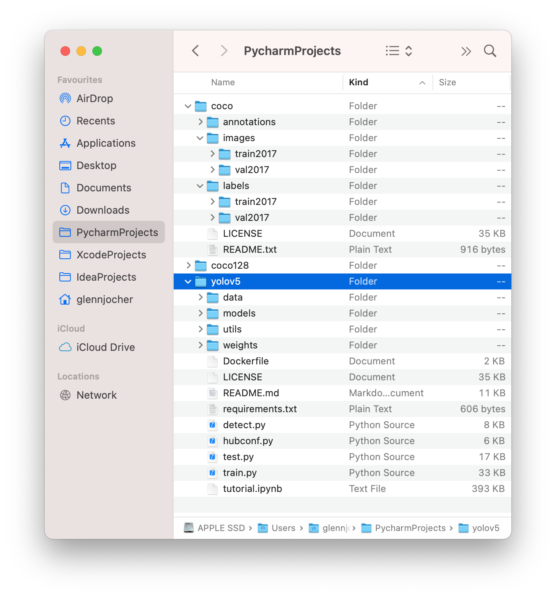
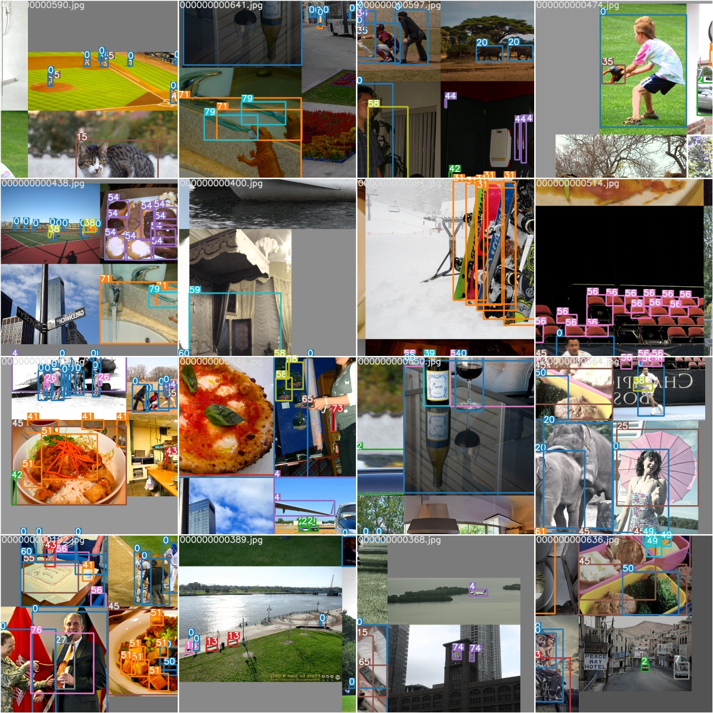
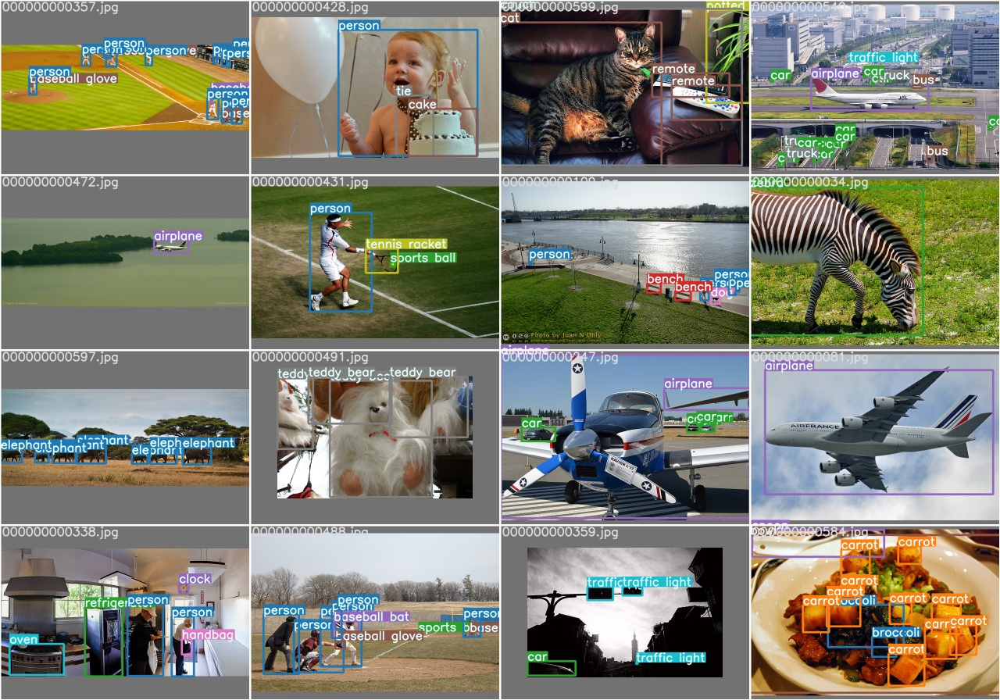
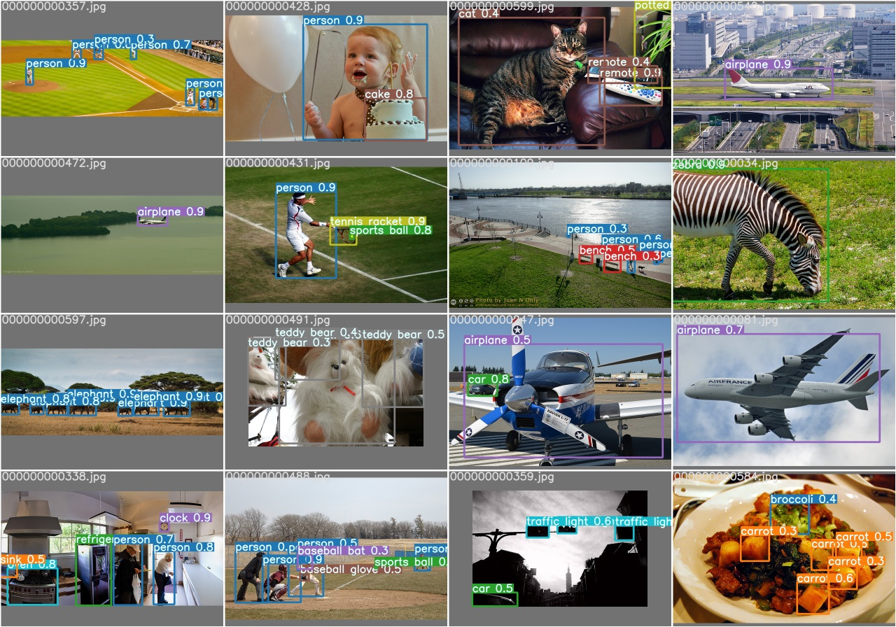

自定义数据 📌
导航
自定义数据 📌#
📚本指南解释了如何使用YOLOv5🚀训练自定义数据集。
训练#
设置训练配置。
创建 dataset.yaml#
COCO128 是一个小型教程数据集，由 COCO train2017 中的前 128 张图像组成。这些相同的 128 幅图像用于训练和验证，以验证我们的训练管道能够过拟合。data/coco128.yaml 是数据集配置文件它定义了：
可选下载命令/ 自动下载的 URL；
训练图像路的目录（或训练图片路径列表的
*.txt文件）；验证图片的目录（或验证图片路径列表的
*.txt文件）；类的数量；
类名称的列表
# COCO 2017 dataset http://cocodataset.org - first 128 training images
# Train command: python train.py --data coco128.yaml
# Default dataset location is next to YOLOv5:
# /parent
# /datasets/coco128
# /yolov5
# Train/val/test sets as 1) dir: path/to/imgs, 2) file: path/to/imgs.txt, or 3) list: [path/to/imgs1, path/to/imgs2, ..]
path: ../datasets/coco128 # dataset root dir
train: images/train2017 # train images (relative to 'path') 128 images
val: images/train2017 # val images (relative to 'path') 128 images
test: # test images (optional)
# Classes
nc: 80 # number of classes
names: [ 'person', 'bicycle', 'car', 'motorcycle', 'airplane', 'bus', 'train', 'truck', 'boat', 'traffic light',
'fire hydrant', 'stop sign', 'parking meter', 'bench', 'bird', 'cat', 'dog', 'horse', 'sheep', 'cow',
'elephant', 'bear', 'zebra', 'giraffe', 'backpack', 'umbrella', 'handbag', 'tie', 'suitcase', 'frisbee',
'skis', 'snowboard', 'sports ball', 'kite', 'baseball bat', 'baseball glove', 'skateboard', 'surfboard',
'tennis racket', 'bottle', 'wine glass', 'cup', 'fork', 'knife', 'spoon', 'bowl', 'banana', 'apple',
'sandwich', 'orange', 'broccoli', 'carrot', 'hot dog', 'pizza', 'donut', 'cake', 'chair', 'couch',
'potted plant', 'bed', 'dining table', 'toilet', 'tv', 'laptop', 'mouse', 'remote', 'keyboard', 'cell phone',
'microwave', 'oven', 'toaster', 'sink', 'refrigerator', 'book', 'clock', 'vase', 'scissors', 'teddy bear',
'hair drier', 'toothbrush' ] # class names
# Download script/URL (optional)
download: https://github.com/ultralytics/yolov5/releases/download/v1.0/coco128.zip
创建标签#
在使用 CVAT、makesense.ai 或者 Labelbox 标注你的图片，输出你的标签为 YOLO 格式，每幅图像一个 *.txt 文件（如果图像中没有对象，则不需要 *.txt 文件）。*.txt 文件规格如下:
每个对象一行
每一行都是
class x_center y_center width height格式。边框坐标必须是 归一化的
xywh格式（从 0 到 1）。如果框以像素为单位，则将x_center和width除以图像宽度，y_center和height除以图像高度。类号是零索引的（从 0 开始)）。

上图所对应的标签文件包含 2 个人（类 0）和一条领带（类 27）：

组织目录#
根据下面的示例组织您的 train 和 val 图像和标签。在本例中，我们假设 /coco128 位于 /yolov5 目录旁边。YOLOv5 通过将每个图像路径中的最后一个 /images/ 实例替换为 /labels/ 来自动定位每个图像的标签。例如：
dataset/images/im0.jpg # image
dataset/labels/im0.txt # label

选择一个模型#
选择一个预先训练的模型来开始训练。这里选择 YOLOv5s，最小和最快的可用模型。

训练#
在 COCO128 上训练 YOLOv5s 模型，指定数据集、批大小、图像大小，或者预训练的 --weights yolov5s.pt（推荐），或者随机初始化 --weights '' --cfg yolov5s.yaml（不推荐）。预训练的权重可以从最新的YOLOv5 版本中自动下载。
# Train YOLOv5s on COCO128 for 5 epochs
$ python train.py --img 640 --batch 16 --epochs 5 --data coco128.yaml --weights yolov5s.pt
所有的训练结果都保存到 runs/train/，运行目录是递增的，例如：runs/train/exp2, runs/train/exp3 等。要了解更多细节，请参阅我们谷歌 Colab 笔记本的训练部分。

可视化#
权重和偏差日志#
Weight & Bias（W&B）现在与 YOLOv5 集成，用于训练运行的实时可视化和云记录。这允许更好的运行比较和内省，以及改进团队成员之间的可见性和协作。要启用 W&B 日志，请安装 wandb，然后进行正常训练（您将在第一次使用时得到指导）。
$ pip install wandb
在训练期间，您将在 https://wandb.ai 上看到实时更新，您可以使用 W&B 报告工具创建结果的详细报告。

本地日志#
默认情况下，所有结果都被记录到 runs/train，为每个新的训练创建一个新的实验目录，如 runs/train/exp2、runs/train/exp3 等。查看训练和测试 jpgs 可以看到马赛克（mosaics），标签，预测和增强效果。注意，马赛克数据加载器（Mosaic Dataloader）用于训练（如下所示），一个由 Ultralytics 首次在 YOLOv4 开发的新概念。
train_batch0.jpg 显示训练批次 0 的马赛克和标签：

test_batch0_labels.jpg 显示测试批次 0 标签：

test_batch0_pred.jpg 显示测试批 0 的预测：

训练损失和性能指标也被记录到 Tensorboard 和一个定制的 results.txt 日志文件中，该日志文件在训练完成后绘制为 results.png（下图）。在这里，我们展示了训练过 COCO128 到 300 个 epoch 的 YOLOv5s，从头开始（蓝色），以及预训练 --weights yolov5s.pt（橙色）。
from utils.plots import plot_results
plot_results(save_dir='runs/train/exp') # plot results.txt as results.png

环境#
YOLOv5 可以在以下任何一个最新验证环境中运行（所有依赖项包括 CUDA/CUDNN, Python 和 PyTorch 预安装）：
谷歌 Colab 和 Kaggle 笔记本与免费 GPU
谷歌云深度学习虚拟机。见 GCP 快速入门指南
亚马逊深度学习AMI。见 AWS 快速入门指南
Docker Image。见 Docker 快速入门指南

状态#

如果此标识为绿色，则当前通过了所有 YOLOv5 GitHub Actions Continuous Integration（CI）测试。CI 测试在 MacOS、Windows 和 Ubuntu 上每 24 小时和每次提交时验证 YOLOv5 训练（train.py）、测试（test.py）、推断（detect.py）和导出（export.py）的正确操作。